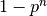

第 18 章：复制（REPLICATION）
Replication – maintenance of copies of data at multiple computers:
- key to the effectiveness of distributed systems
- provide enhanced performance, high availability and fault tolerance
- used widely, e.g. local web caching, DNS naming, etc.
- a technique for enhancing services
Motivations
Motivations for replication include:
Increased availability
Apart from delays due to pessimistic concurrency control conflicts (due to data locking), the factors that are relevant to high availability are:
- server failures
- replication is a technique for automatically maintaining the availability of data despite server failures
- if data are replicated at two or more failure-independent servers, then client sofrware may be able to access data at an alternative server when the default server fail or become unreachable.
- the percentage of time during which the SERVICE is available can be enhanced by replicating server data
- if each of n servers has an independent probability p of failing or becoming unreachable, then the availability of an object stored at each of these servers is : 
- network partitions and disconnected operation
- user need to working in a disconnected environment
- often prepare by copying heavily used data, such as the contents of a shared diary, from their usual environment to the laptop or mobile phone
- when the user consults or updates the data, they risk reading data that someone else has altered in the meantime
- disconnected working is ONLY feasible if the user (or the application on the user’s behalf) can cope with stale data and can later reslove any conflicts that arise
Fault tolerance
- high available data is NOT necessarily strictly correct data, it may be out of date, incomplete, or have some kind of error, etc.
- a fault-tolerant service, by contrast, ALWAYS guarantees strictly correct behaviour despite a certain number and type of faults.
- the correctness concerns :
- the freshness of data supplied to the client, and
- the effects of the client’s operations upon the data,
- sometimes also concerns the timeliness of the service’s responses.
- the same basic technique used for high availability – that of replicating data and functionality between computes – is also applicable for achieving fault tolerance:
- more replication server, higher availability
- but system must manage the coordination of its components precisely to maintain the correctness guarantees in the face of failures, which may occur at any time.
Requirement
- replication transparency:
- clients should not normally have to be aware that MULTIPLE PHYSICAL copies of data exists.
- as far as clients are concerned, data are organized as INDIVIDUAL LOGICAL objects and they identify ONLY ONE item in each case when they request an operation to be performed.
- clients expect operations to return ONLY ONE set of values.
- consistency (can be vary in strength between applications): concerns wherther the operations performed upon a collection of replicaed objects produce result that meet the spcification of correctness for those objects.